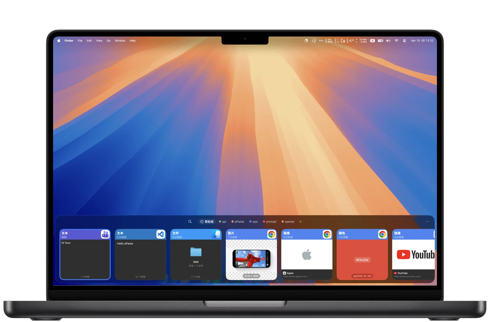
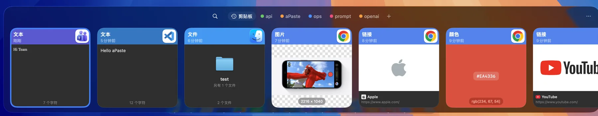

输入即可搜索。
按内容类型（文本、链接、图片、文件）、日期或来源 App 筛选；开启图片文字识别后，图里的文字也能被搜到。方向键选择，Return 粘贴。
按 ⌃` 呼出面板，输入关键词就能搜到之前复制过的内容。常用内容存进 Pinboard，选中后按 Return 直接粘贴回当前 App。

剪贴板历史以可搜索的卡片呈现，常用内容单独放在 Pinboard；需要连续粘贴多条时用 aPaste Stack，粘贴前还能顺手把内容处理好。
按内容类型（文本、链接、图片、文件）、日期或来源 App 筛选；开启图片文字识别后，图里的文字也能被搜到。方向键选择，Return 粘贴。
代码片段、地址、回复模板放进彩色 Pinboard，⌘← / ⌘→ 切换。清理历史时 Pinboard 不受影响。
⌘⇧C 打开 Stack，连续复制多条内容，然后按顺序一条条粘贴出去，整理表格和填表时特别省事。
文本保留富文本格式并识别其中的颜色值，链接可抓取网页标题和图片（这项联网抓取可以关掉），图片和文件各有对应卡片。
按内容类型、来源 App、文本（支持正则）、网址主机、文件扩展名或体积区间，自动忽略或固定到指定 Pinboard。规则可以先在已有历史上试跑一遍。
卡片右键菜单里内置 9 个快捷处理动作，处理结果直接复制到剪贴板。
底部面板贴着屏幕下沿横向浏览；Command Center 是可调整大小的窗口，左边列表右边详情，适合长内容。
密码管理器等标记为机密的内容、以及临时剪贴板内容，开箱即被跳过；还可以按 App 完全停止记录。截图 / 录屏隐藏是一个可选开关，默认关闭，需要时自行打开。
查看全部功能在面板里快速扫一眼，需要更多上下文时再打开完整预览。

支持的内容自动进入历史；被隐私设置或捕获规则排除的内容不会被记录。
按快捷键打开面板，输入关键词，或用 ⌘← / ⌘→ 切到 Pinboard。
选中内容按 Return，直接粘贴回刚才使用的 App（需要辅助功能权限）。
aPaste 不需要账号，也没有自建云服务。只有在你亲自指定一个共享文件夹之后，数据才会被写出去——把它放进 iCloud Drive、Dropbox 或 Syncthing 的同步目录，多台 Mac 就能共用同一份历史。
aPaste 目前没有 Apple 开发者签名与公证，所以需要手动放行一次。下面每一步都说明了原因。
每个版本提供两个安装包：Apple Silicon 用 -arm64，Intel 用 -x86_64。不确定的话点左上角的苹果菜单 →「关于本机」看芯片型号。也可以用 Homebrew，它会自动选对架构。
把 aPaste.app 拖进「应用程序」后，macOS 可能提示「已损坏，无法打开」。这不是文件损坏，而是应用只做了本地签名、没有经过 Apple 公证，Gatekeeper 会拦下来。执行下面这条命令即可放行：
xattr -dr com.apple.quarantine /Applications/aPaste.app
按 Return 直接粘贴回原 App 是通过模拟 ⌘V 实现的，需要在「系统设置 → 隐私与安全性 → 辅助功能」里勾选 aPaste。全局快捷键不依赖这个权限；不授权时仍可复制内容后自己粘贴。
应用没有经过 Apple 公证，Gatekeeper 会给出这个误导性提示。在终端执行 xattr -dr com.apple.quarantine /Applications/aPaste.app 后即可正常打开，安装包本身是完好的。
只有「粘贴回当前 App」这一个功能需要它——aPaste 通过模拟 ⌘V 完成粘贴。不授权时，其余功能（记录、搜索、Pinboard、复制到剪贴板）都照常工作。
历史与 Pinboard 存在本机的本地数据库里。除了链接预览（可关闭）会请求网页信息之外，aPaste 不会主动联网；只有你自己指定共享文件夹后，才会向那个文件夹写出同步数据。
在两台 Mac 上指向同一个共享文件夹即可，例如 iCloud Drive、Dropbox 或 Syncthing 目录。aPaste 只负责按月分片写 NDJSON 记录和资源文件，同步本身交给你选择的工具。需要更强保护时可以开启端到端加密并设置口令。
文本、链接、图片、文件四类。文本还会额外识别富文本格式和颜色值，图片可开启文字识别（OCR）后参与搜索。
可以。菜单栏里能临时暂停捕获，也可以在设置里把某些 App 加入忽略名单，或者用捕获规则按内容类型、文本、网址、扩展名等条件自动忽略。
设置里可以一键清空历史，也能设置按天数或条数自动清理。删除应用后，把同步文件夹里的 aPaste 数据文件一并删除即可。
需要 macOS 15 或更高版本。发布页里 Apple Silicon 与 Intel 各有一个 DMG，按芯片选择即可；Homebrew 会自动选对架构。
brew tap alliottech/tap
brew install --cask alliottech/tap/apaste
xattr -dr com.apple.quarantine /Applications/aPaste.app两个安装包按芯片分别构建，并非通用二进制。